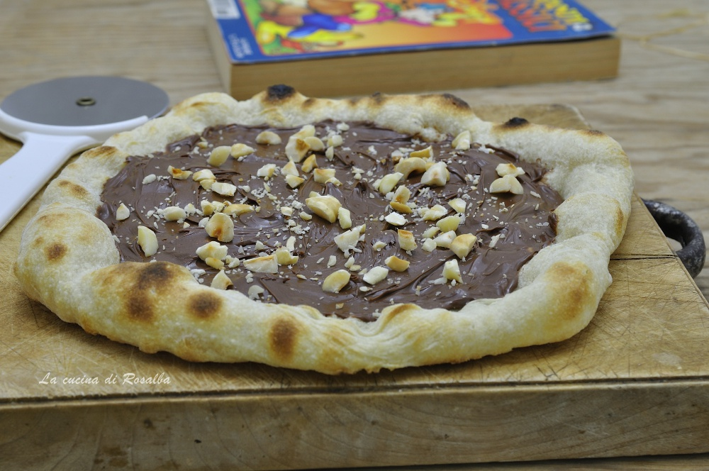

Pizza alla nutella
La pizza perfetta per la merenda
Ingredienti
- 450 g Farina
- 2 grammi lievito di birra fresco
- 1/2 chucchiaino zucchero
- un barattolo di nutella
- 250 ml acqua
- 10 gr di sale
- 1 cucchiaino di olio extravergine di oliva
- granella di nocciole
Procedimento
- Pesare e misurare tutti gli ingredienti. Sciogliere il lievito di birra fresco in 100 ml
d’acqua presa dal totale, unire lo zucchero, mescolare attivare qualche minuto.
- Versare la farina nella ciotola impastatrice, unire l’acqua, il lievito ed iniziare ad impastare,
il sale e continuare ad impastare fino ad ottenere un composto quasi omogeneo, in ultimo incorporare
l’olio extravergine d’oliva.
- Trasferire l’impasto sul piano di lavoro e ultimare di impastare, sistemare nella ciotola,
coprire con la pellicola trasparente e lasciare lievitare fino al raddoppio, meglio se dentro il forno spento e la luce accesa.
- Capovolgere l’impasto raddoppiato sul piano di lavoro leggermente infarinato,
dare un paio di pieghe e con un taglio netto ottenere 4 pezzature di circa 170 gr o del peso che si desidera.
- Avvolgere i panetti su se stessi, disporli su una placca infarinata e lasciare lievitare fino al raddoppio,
di nuovo dentro il forno spento e la luce accesa.
- Allargare i panetti lievitati su un piano poco infarinato, bucherellare la superficie per non farla gonfiare
in cottura e cuocere in forno già caldo a 240° o nel fornetto per pizza per tre minuti.
- Sfornare, lasciare intiepidire, spalmare con la nutella, ultimare con la granella di nocciole e servire!
Tabella nutrizionale
| valori nutrizionali |
per 100gr di prodotto |
| proteine |
20g |
| carboidrati |
100gr |
| grassi |
25gr |
| fibre |
89gr |
| energia |
210kc |